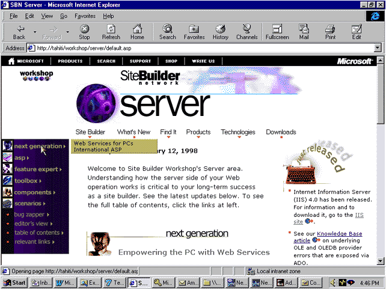
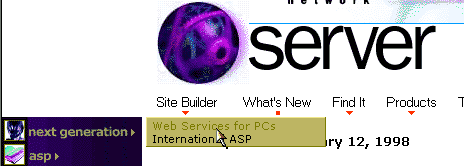

|
| ||
|
| ||
Robert Carter
George Young, Web Design Engineer
Microsoft Corporation
January 23, 1998
 Download the sample Dynamic HTML Pop-up Menu code (zipped, 23.5K).
Download the sample Dynamic HTML Pop-up Menu code (zipped, 23.5K).
Contents
Introduction
Functional Description
The Code
Adapting the Pop-up Menu Code to Your Site
Summary
A key navigational element of the new MSDN Online Web Workshop Server area design is a pop-up menu written by George Young. It uses Dynamic HTML and JavaScript to reveal site-wide navigation to Server area visitors from every page, saving them time and effort in their search for useful information. Of the ten different sections available in the Server area, seven use the pop-up menus to display the list of articles for that section. (The other three sections point to one document apiece, and don't need the pop-up menu function.)
At present, the pop-up menu is visible only to surfers using Microsoft® Internet Explorer 4.0 on the Windows 95® or Windows NT® platforms. People using other browsers or platforms are sent to a standard table-of-contents page, and can jump from there to specific articles of interest. This article describes how our pop-up menus work, and provides all the code and discusses considerations necessary to adapt it to your site.
If you have Internet Explorer 4.0 on Windows 95 or Windows NT, skip over to the Server area home page and click any navigation item (except the Table of Contents, Editor's View, and Relevant Links items) along the left side of the screen. An additional menu box listing the contents of that section appears immediately to the right of the navigational item you selected (and has a nice scroll-down effect). If you move the mouse over one of the article titles in the menu, the title changes color. Clicking the title sends you to the article. The menu remains visible until you click somewhere else on the page.

Figure 1. Screen shot demonstrating the pop-up menuSo much for the easy stuff. Now I get to tell you how it works.
The Server area navigation menu (the section with the purple background) is a table. Each cell in the table, as you've probably surmised, is a GIF image. To determine whether to load the images that activate the pop-up menu, we use Active Server Pages (ASP) to sniff for the user's browser and platform. If the browser is Internet Explorer 4.0 for Windows 95 or Windows NT, the image tag used includes two attributes, ID and CLASS:
<IMG ID="idMenuTitle1" CLASS="clsMenuTitle" src="/workshop/server/graphics/server-nextgen-navb.gif" WIDTH="140" HEIGHT="27" BORDER=0 ALIGN=TOP ALT="Next Generation">
For other browsers or platforms, the image tag is linked to the selected section of the table-of-contents page:
<A href="/workshop/server/toc.asp#nextgen"><img src="/workshop/server/graphics/server-nextgen-navb.gif" WIDTH="140" HEIGHT="27" BORDER=0 ALT="Next Generation"></a>
This provides graceful navigation for everyone who visits the site. The traditional-style annotated table-of-contents page is accessible to all users by clicking the Table of Contents item.
Now we'll concentrate on the pop-up menu functionality. The ID="idMenuTitle1" attribute is accessed by a script through an onclick() event-handler in the <BODY> tag of the page:
<BODY TOPMARGIN=0 LEFTMARGIN=0 BGCOLOR="#FFFFFF" LINK="#000066" VLINK="#666666" TEXT="#000000" ONCLICK="doMenu()">
The onclick() event-handler in the body tag calls the doMenu() function when the user clicks anywhere on the page. Here is doMenu():
var sOpenMenuID = ""
var iTimerID
function doMenu() {
if (bIsIE432) {
var esrc = window.event.srcelement
window.event.cancelBubble = true
if (sOpenMenuID != "") {
document.all[sOpenMenuID].style.display = "none"
}
if (eSrc.className=="clsMenuTitle") {
var nMenuNum = eSrc.id.substring(eSrc.id.length - 1,eSrc.id.length)
sOpenMenuID = "idMenu" + nMenuNum
var eMenu = document.all[sOpenMenuID]
eMenu.style.clip = "rect(0 0 0 0)"
document.all[sOpenMenuID].style.display = "block"
nChunk = 25
iTimerID = window.setTimeout("showMenu(" + eMenu.id + "),10")
}
}
}
First, doMenu() checks to see whether an appropriate version of Internet Explorer is being used (if (bIsIE432)). This Boolean (true/false) variable is set to true in an earlier JScript™ statement if the user's browser is Internet Explorer 4 for Windows 95 or Windows NT.
The var esrc = window.event.srcelement statement assigns the element that was clicked to the variable eSrc (in a variation of the Dvorak notation, we use "e" to stand for element).
The window.event.cancelBubble = true statement prevents the command from "bubbling up" (if, like me, you don't really know what that means, I encourage you to read Bubble Power: Event Handling in Internet Explorer 4.0 by Michael Wallent).
The if (sOpenMenuID != "") conditional statement checks whether another menu on the page is open. If there is, the open menu is closed with the document.all[sOpenMenuID].style.display = "none" statement.
The second half of doMenu(), shown in the previous section, selects and displays the appropriate menu. After prepping the page to display the menu (by closing any open menus), doMenu() tests whether the clicked element belongs to the class clsMenuTitle. In this case it does (because the Next Generation GIF we're clicking contains a CLASS="clsMenuTitle" attribute).
Once we verify that a pop-up menu is called, we need to figure out which of the seven menus to display. To do that, we perform a little sleight-of-hand with the Next Generation GIF ID declarations.
On MSDN Online Web Workshop, we use naming conventions for all attributes accessible by script. Thus, the GIFs that activate the pop-up menu have a similar ID: idMenuTitle followed by an integer (1 through 7). The variable nMenuNum points to the integer by subtracting the eSrc.id.length-1 from the total eSrc.id.length. The integer is then assigned to nMenuNum using the eSrc.id.substring property:
if (eSrc.className=="clsMenuTitle") {
var nMenuNum = eSrc.id.substring(eSrc.id.length - 1,eSrc.id.length)
Once the integer is isolated and assigned to nMenuNum, we use a variable just declared (with a starting value of ""), sOpenMenuID, that concatenates the text string idMenu and nMenuNum to yield a new value of idMenu1.
The var eMenu = document.all(sOpenMenuID) statement creates a pointer to the element of the page associated with the variable sOpenMenuID -- which now has the value idMenu1. The next two lines assign a style of rectangle to eMenu, and then tells Internet Explorer to show all parts of the document associated with idMenu1 (as of this moment a dimensionless rectangle). The nChunk = 25 statement assigns a starting value to a variable we will use to control the display of the Next Generation menu. Finally, in the next line, a timer is started using the window.setTimeout() method. In this case, we set the timer to wait 10 milliseconds and then call our showMenu() function, which will actually display the menu..
Now we can finally display the Next Generation menu. The menu is simply a <DIV> with an ID that matches the one generated from the sOpenMenuID concatenation (and a class of clsMenu). Each menu item is presented within an anchor pointing to the article's URL:
<DIV ID="idMenu1" CLASS="clsMenu"> <A href="/workshop/server/nextgen/pws.asp"> Web Services for PCs</a> <BR> <A href="/workshop/server/nextgen/nextgen.asp"> International ASP</a> <BR> </DIV></TD>
George being George, the menu display must be elegant, so the expression in parentheses refers to a function called showMenu():
var nChunk
function showMenu(eMenu) {
eMenu.style.clip = "rect(0 100% " + nChunk + "% 0)"
nChunk +=25
if (nChunk <= 100) {
iTimerID = window.setTimeout("showMenu(" + eMenu.id + "),10")
}
else {
window.clearTimeout(iTimerID)
}
}
showMenu() creates a scroll-down effect by displaying the menu in 25% chunks every 10 milliseconds. The first time through, nChunk is set to 25, and showMenu creates a rectangle whose width extends to 100% of its intended size and whose height extends to 25% of its eventual size (the eMenu.style.clip statement). nChunk is then incremented by 25, so the next time showMenu is evaluated (10 milliseconds later), 50% of the menu's eventual height displays. And so on, until nChunk is greater than or equal to 100, at which time the timer variable is cleared, stopping the timer.

The style of the pop-up menu is outlined in our style sheet, and the menu-item color-change happens by virtue of the hover property. For more on CSS properties and how to apply them to your HTML documents, see Cascading Style Sheets in Internet Explorer 4.0.
.clsMenuTitle { cursor:hand; }
.clsMenu {
border:solid 1; border-color:khaki olive olive khaki;
background-color:darkkhaki; position:absolute; display:none;
padding:1px; width:150px; z-index:1; padding-left:5px;
font-family:verdana; font-size:8pt;
}
.clsMenu A { text-decoration:none; color:black; }
.clsMenu A:hover { color:olive; }
Although there's a fair amount of code, adapting it to your site is fairly trivial, especially if you include the script and style sheet on each page through ASP include statements (as we do). The key is to make sure you have all the script, CSS, and inline attributes in place, and keep the properties and values in sync.
For each menu (or list of links) you wish to include, create a DIV item just like the one outlined in Displaying the Menu. Make sure to use the same CLASS values that we do for the menu titles (clsMenuTitle) and the menus (clsMenu), and to use the incremental numbering system for the related <DIV>s (idMenu1, idMenuTitle1, and so on). If you have more than nine menus, you'll need to change your script to eSrc.id.length-2 and use two digits in all your IDs (idMenu01, idMenuTitle01, and so on). Download our sample Dynamic HTML code with helpful comments (available at the top of this page) and peruse it to see what CSS, scripts, and inline attributes are placed where.
Pop-up menus provide an elegant way to simplify the navigation of complex or data-heavy sites. Users have immediate access to all the articles on a site from a small piece of page real estate. They avoid the annoyance of using the back button repeatedly or scrolling in their quest to find the information they seek, and they spend a lot less time waiting for unnecessary pages to load. You benefit from the reduction in server hits that comes with more efficient use of your site navigation. And the menus looks really good, too.
If you want to spend more time learning DHTML, you can start with the following:
An overview
A discussion of the Document Object Model
Did you find this material useful? Gripes? Compliments? Suggestions for other articles? Write us!
© 1999 Microsoft Corporation. All rights reserved. Terms of use.